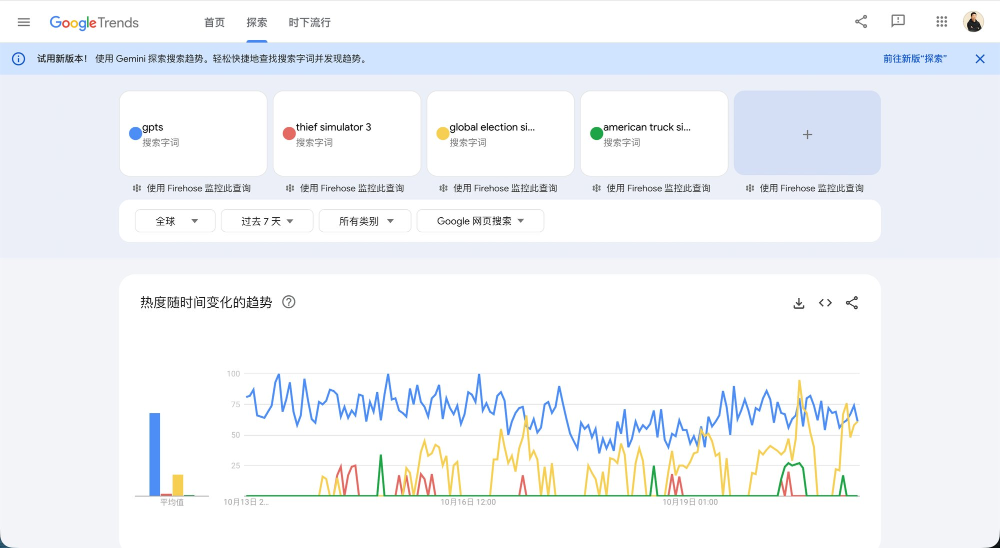
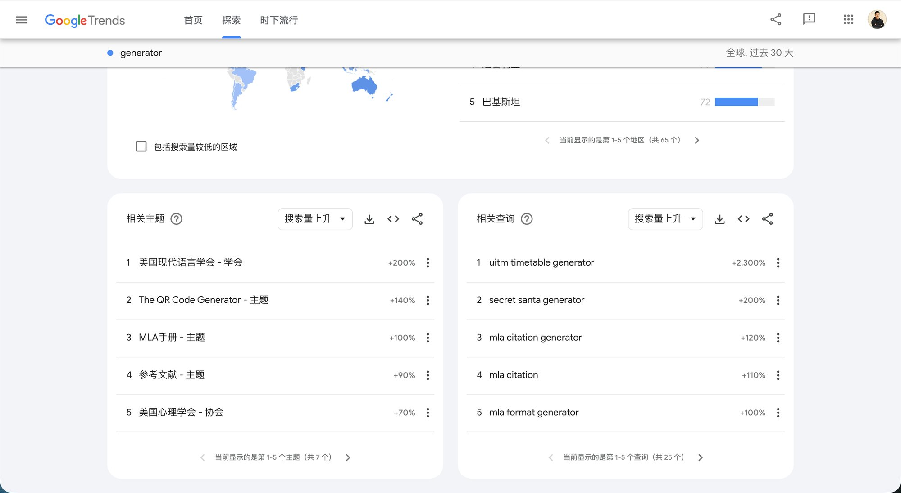
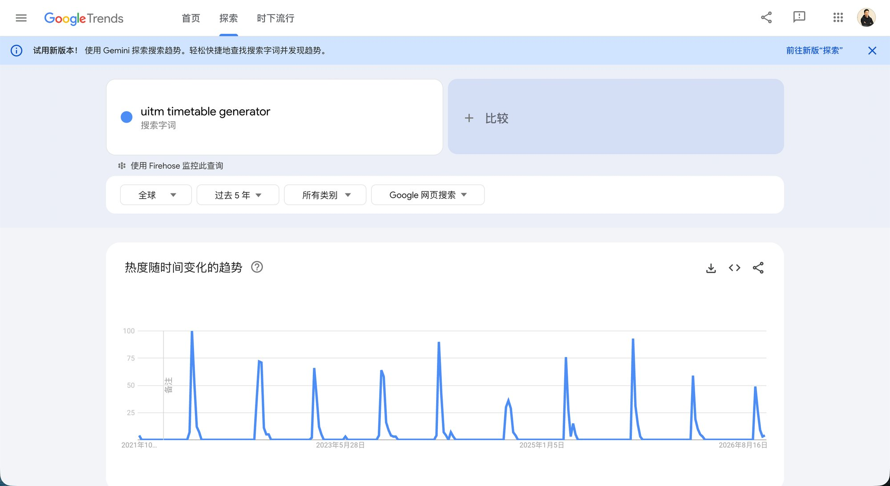
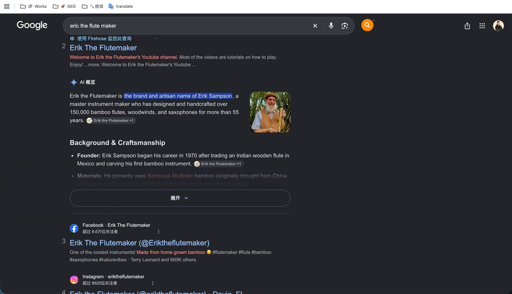

今天的复盘来得有点晚，有点感冒。
北京降温了，早上还下雨，在京的兄弟姐妹们注意保暖啊。
六点半起来送孩子，穿的少感冒了。回来喝了点药，昏昏沉沉睡到中午，下午 5 点才缓过来。
今天学的是挖新词。
先说个发现：入门教程里大多在讲老词。新词的玩法散在群友的帖子和比赛复盘里。
群里有现成的新词服务，每天自动扫好了。但我想先自己找 20 个，把眼力练出来。
带着 4 个问题学，说说我现在的理解：
1. 啥是新词：以前没人搜，最近突然有人搜的词。
2. 去哪找：拿 generator、maker、simulator 这种词根，去 Google Trends（谷歌趋势）看过去 7 天「搜索量上升」的词。
3. 值不值得做：一是够热，热度到 gpts 这个词的 5% 以上，群里都拿 gpts 当尺子（图 1）；二是还在涨；三是前排没有专门做这个词的站。
4. 做得好不好：上线后先看收录，再看排名，最后看点击。
今天查了 7 个词根，找到 5 个候选，进度 5/20。
踩了几个坑：
一是「上升」不等于「新」。查 generator，涨得最猛的全是论文引用工具（图 2），开学季每年都涨。拉长到 5 年看，曲线是一排锯齿（图3），是老词。
二是曲线新，事不一定新。有个词曲线跟新词一模一样，一查是个做了 55 年竹笛的老爷子，某个视频火了（图 4）。
三是 Google Ads 注册完，别手滑把广告真投出去了。
最大的感受是，新词的窗口按天算。有两个词才火几天，前排已经有人建好站了。
我原计划选完词 5 天后上线，对新词来说太慢了，后面得调整。
最后说个感悟：工具站和服务站不一样。
工具站，关键词就是需求，用户搜进来直接用，能闭环。 服务站，比如做 GEO（让 AI 搜索推荐你），流量来了也没法直接交付，还得跟客户聊。（文中的词都是练手查的，不是我要做的词）
明天接着找剩下的 15 个。
想问问做过新词的朋友：从发现词到上线，你们一般多久？




引用原帖（已镜像）：按哥飞社群流程正式开工：新词站六步计划 — https://x.com/iamjianyuwu/status/2110983676993683761 → /posts/jianyuwu-geifei-six-steps/